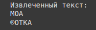
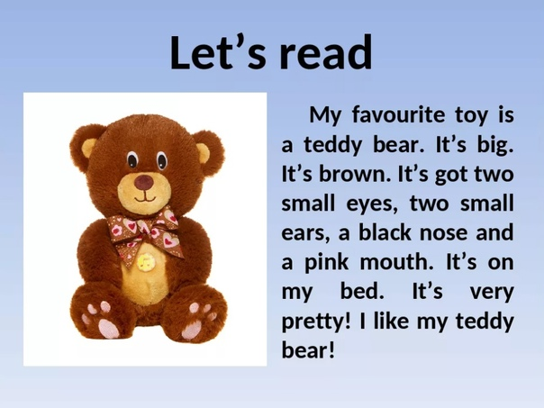
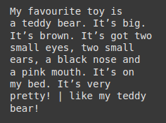

Что такое Tesseract?
Tesseract — это бесплатная оптическая система распознавания текста (OCR), которая поддерживает более 100 языков. Она может извлекать текст из различных форматов изображений и преобразовывать его в машиночитаемый формат. Tesseract очень эффективен для задач, связанных с извлечением текста из сканированных документов, фотографий и изображений с текстом.
Как работает OCR?
OCR (Optical Character Recognition) — это процесс распознавания текста на изображениях. Tesseract анализирует пиксели изображения и находит области, содержащие текст. Затем он применяет различные алгоритмы для идентификации символов и их преобразования в текстовый формат.
Установка Tesseract
Чтобы использовать Tesseract, сначала нужно установить библиотеку и необходимые зависимости. Для этого выполните следующие шаги:
- Скачайте и установите Tesseract: официальная страница Tesseract.
- Установите библиотеку Python для работы с Tesseract:
pip install pytesseract. - Убедитесь, что Tesseract правильно настроен на вашем компьютере, и что путь к исполнимому файлу Tesseract добавлен в переменную среды PATH.
Пример использования Tesseract для извлечения текста
Теперь давайте рассмотрим, как использовать Tesseract для извлечения текста из изображения с помощью Python. Для этого мы используем библиотеку pytesseract, которая является оберткой для Tesseract.
Шаги:
- Загрузите изображение с текстом.
- Примените функцию
image_to_string()для извлечения текста. - Обработайте текст по необходимости.
Пример кода
# Открываем изображение
image = Image.open('teddy.jpg')
# Извлекаем текст из изображения
text = pytesseract.image_to_string(image)
# Выводим извлеченный текст
print("Извлеченный текст:")
print(text)
В этом примере мы загружаем изображение, применяем функцию image_to_string() для извлечения текста, а затем выводим результат.
Результат:
  Вывод: изображения с русским языком плоховато, инглиш вери гуд
Предобработка изображений для улучшения качества OCR
Для повышения точности распознавания текста рекомендуется предварительно обработать изображение. Некоторые популярные методы предобработки:
- Преобразование в черно-белое изображение: Tesseract работает лучше, если изображение преобразовано в черно-белое.
- Удаление шума: Удаление шума может значительно повысить точность распознавания.
- Увеличение контраста: Увеличение контраста помогает выделить текст на изображении.
Пример предобработки изображения
import cv2
import pytesseract
# Загружаем изображение
image = cv2.imread('example_image.png')
# Преобразуем в серые оттенки
gray_image = cv2.cvtColor(image, cv2.COLOR_BGR2GRAY)
# Применяем бинаризацию (черно-белое изображение)
_, threshold_image = cv2.threshold(gray_image, 150, 255, cv2.THRESH_BINARY)
# Применяем OCR
text = pytesseract.image_to_string(threshold_image)
# Выводим результат
print("Извлеченный текст:")
print(text)
Этот код сначала преобразует изображение в серые оттенки, затем применяет бинаризацию для получения черно-белого изображения и, наконец, извлекает текст с помощью Tesseract.
Трудности и ограничения OCR
Хотя Tesseract является мощным инструментом, существуют некоторые ограничения и проблемы, с которыми вы можете столкнуться:
- Шумные изображения: Если на изображении присутствует слишком много шума, точность распознавания может значительно снизиться.
- Неидеальные шрифты: Tesseract может не распознавать некоторые шрифты или нестандартное оформление текста.
- Изогнутый текст: Если текст на изображении изогнут, его будет сложнее распознать.
Чтобы минимизировать эти проблемы, важно предварительно обработать изображение и, если необходимо, вручную улучшить качество изображения.
Применения OCR
OCR широко используется в различных областях, включая:
- Сканирование документов: Преобразование бумажных документов в текстовый формат для хранения и поиска.
- Распознавание чеков: Извлечение данных с чеков и квитанций.
- Распознавание адресов: Извлечение адресов из изображений или фотографий.
- Обработка данных с изображений: Извлечение текстов из изображений в социальных сетях, рекламе и прочих медиа-ресурсах.